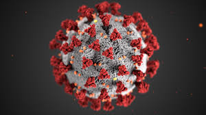

-
First radiological images sent via telephone
-
Nebraska Psychiatry Institute uses closed-circuit TV for psychiatric consultations
-
U.S. Space Program Conducts Test Flights with Animals Using Remote Medical Monitoring Systems
-
The Internet is Born
-
More than 11,000 papers using keywords "telemedicine" and "telehealth" published
-
Founding of the American Telemedicine Association
-
COVID-19 pandemic spurs rapid expansion of telehealth use to reduce physical contact
 -
Virdoc is founded in an effort to provide affordable, inexpensive, accessible, and high quality care to all